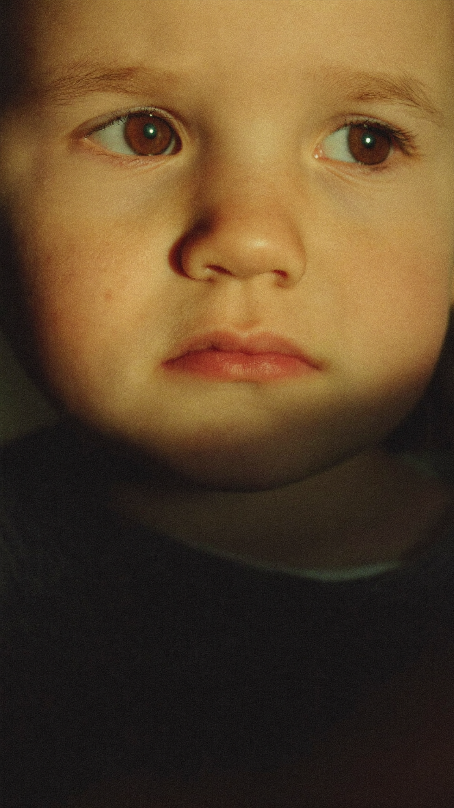
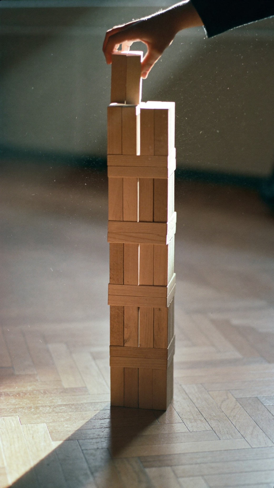
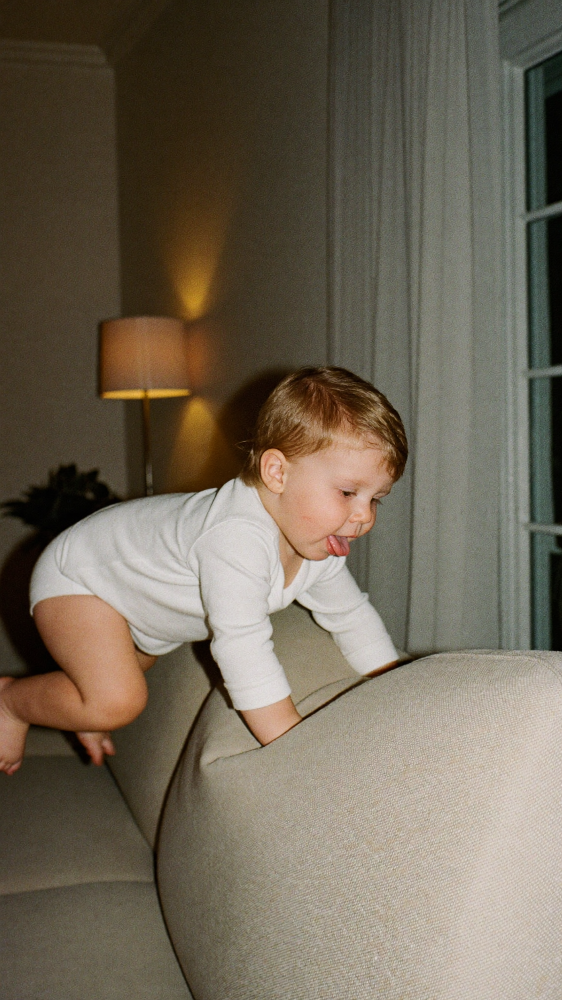

Ton enfant parle tard.
Et alors ?
Pendant qu'il se tait, son
cerveau construit autre chose.
Quelque chose de précieux.
Ce qu'on te répète, c'est
: "À son âge, le
mien faisait déjà des phrases
entières." Voici ce que dit
la science.
Le cerveau d'un enfant ne
peut pas tout développer en
parallèle.
Certains investissent d'abord la motricité,
l'observation, ou l'imitation avant
le langage.
Les enfants qui parlent tard
observent beaucoup.
Ils accumulent en silence :
vocabulaire, intonations,
contextes.
Puis un jour, ils sortent
des phrases construites qui surprennent
tout le monde.
C'est comme un bambou qui
ne pousse pas.
Pendant cinq ans, le bambou
semble immobile.
Il fabrique ses racines en
profondeur.
Puis il grandit de plusieurs
mètres en quelques semaines.
Ce qui aide vraiment :
parle-lui normalement,
sans le forcer à répéter.
Nomme ce qu'il regarde,
lis-lui des histoires courtes,
laisse-lui du silence pour répondre.
Pas de pression,
juste de la présence.
Il ne parle pas en
retard. Il parle quand ses
racines sont prêtes.